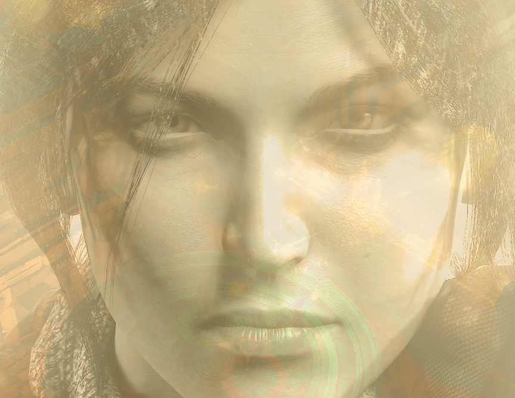
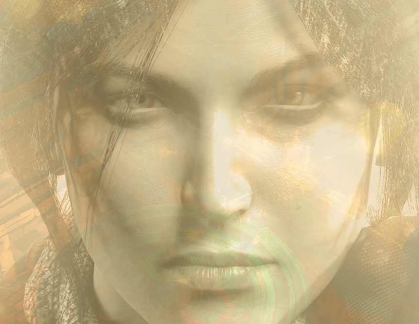

{{ chapo.substring(0,1) }}{{ chapo.substring(1) }}
 

Jeux vidéo : toujours en manque d'héroïnes ?
2018
Méthodologie
Seconde image : Lara Croft en 2013 (Square Enix / Crystal Dynamics)
Coralie, 31 ans
Streameuse de jeu vidéo.
Spécialité : jeux de combat
“Dès que j’ai le choix, je joue avec un personnage féminin”.
"Pouvoir jouer une femme, c’est important pour moi. Par exemple, dans le jeu de combat Streetfighter, je vais toujours incarner Ornika, une catcheuse. Dès que j’ai le choix, je prends un personnage féminin. Ça m’aide à me mettre dans sa peau. Du coup, la qualité de jeu n’est pas la même".
Violette, 25 ans
Joueuse régulière
Spécialité : jeux d'aventure
“Ecouter Lara Croft gémir, ça m’a fait sortir du jeu”
"Quand j’étais enfant, Lara Croft c’était un vrai modèle. Mais maintenant, quand une femme est trop sexualisée, ça me gêne. Dans une des refontes de Lara Croft, à laquelle je jouais en même temps que mon ex, elle était moins sexualisée qu’avant. Mais son petit déhanchement, le fait qu’on l’entende gémir, ça m’a fait sortir du jeu".
Hélicia, 23 ans
Joueuse occasionnelle
Spécialité : jeux de combat
“Je n’achète pas les jeux stéréotypés”
"J’admire les personnages féminins forts, qui vont se battre. J’ai beaucoup vécu le racisme, et ça me sert de catharsis. Mais, du coup, j’ai du mal à me reconnaître dans les figures féminines ultra stéréotypées. J’adore le jeu narratif Life is strange, mais ses héroïnes restent des Américaines blanches, jeunes et jolies".
Les femmes restent minoritaires dans les studios de développement
Malgré une légère augmentation, la part des femmes dans les studios reste faible : elle est passée de 10,4% des effectifs en 2014 à 14% en 2018.
Léa Sanchez
Utilisation des libraries D3.js, Highcharts.js et Juxtapose.js